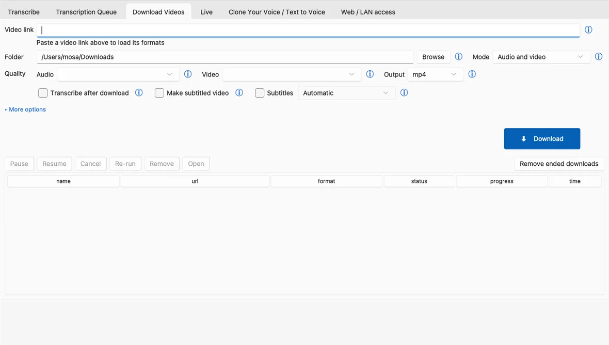

Transcribe a YouTube video to text, free and offline
A free desktop app you install once (Windows, macOS, Linux). Downloading the video needs the internet; the transcription itself runs on your computer.
To turn a YouTube video into text, paste its link into the Download Videos tab, choose a text format, tick Transcribe after download and press Download. The app fetches the video with the open-source downloader yt-dlp, transcribes it with Whisper (a speech-recognition model) on your own computer and saves a TXT, DOCX, PDF or SRT transcript.
Before you start
Take the installer only from the official GitHub releases page (home page links to it). It is not code-signed, so Windows may warn on first launch: More info > Run anyway. Requirements: install guide.
How to transcribe a YouTube video
- First launch only. The Quick start window asks for your language and Fast or Best quality; the speech model downloads once, on first use.
- Open the Download Videos tab and paste the YouTube link into URL. The app looks up the formats and any subtitles by itself.
- Pick a mode. Audio saves only the sound, which is smaller and faster when all you want is a transcript. Audio and video keeps the picture too.
- Optional: use Time range (optional) to download and transcribe only a part. The format is H:MM:SS, and 0:00:00 in both boxes means the whole video.
- Choose the file type before you download. Switch to the Transcribe tab, click Advanced settings… and, under Output formats, tick TXT (or DOCX or PDF). The default is SRT plus JSON, which gives you subtitles, not a plain text file. Keep JSON ticked: it is a JSON file the app uses to open the transcript viewer. The Language and model chosen on that tab apply to downloads too.
- Back on Download Videos, tick Transcribe after download, then click Download.
- Watch the progress. The row in the table fills in, and the Transcription Queue tab shows the speed and the time left. When it finishes, the transcript sits next to the file it came from, and the Last result card on the Transcribe tab offers Open, View transcript and Save shareable page.

A faster route when the video already has captions
When a looked-up video already has captions, a green line under the link says Subtitles available, and a Use captions instead button appears. It skips the media download and the transcription, fetches the captions and converts them to the formats you chose. That takes seconds instead of minutes, but you get the captions as they are, not a fresh Whisper transcript. With Transcribe after download ticked, the app asks which one you want and can remember the answer.
Other sites and videos that need a log-in
Any site the same downloader supports works the same way. For videos that need an account, such as Instagram, Facebook, TikTok stories and age-restricted YouTube videos, choose your browser under Log-in cookies. The app reads that browser's log-in on this computer and uses it only when downloading from that site; it is not sent anywhere else. This may not work for every restricted video.
Good to know
- No connection, no download. While File → Work offline is on, the app refuses link lookups, so switch it off before you paste a link.
- YouTube needs a small helper. If an Install YouTube helper button shows up next to the link status, click it once. Without it, some or all YouTube formats can be missing and downloads can fail. If a download fails like an out-of-date downloader, an Update it bar appears.
Questions
Is it really free?
Yes: free and open source, no account, no subscription, no per-minute cost.
Does my video or transcript get uploaded anywhere?
Not with the default engines: Whisper runs on your own computer, and only the download from the video site uses the network. Two cloud engines exist, but they stay off until you switch them on yourself.
Can it transcribe a video that has no captions, or one in another language?
Yes. Whisper listens to the audio, so captions are not needed. Pick the spoken Language or leave it on Auto. Output: English translation turns non-English speech into English text; it is off by default and does not work with every engine or model.
Can I transcribe only part of a long video?
Yes. Fill in Time range (optional) on the Download Videos tab with a start and end in H:MM:SS. Only that portion is downloaded, and transcribed if you ticked Transcribe after download.
Can I paste a whole playlist?
No. Each task is one video. A link copied from inside a playlist downloads only that video, not the whole list.